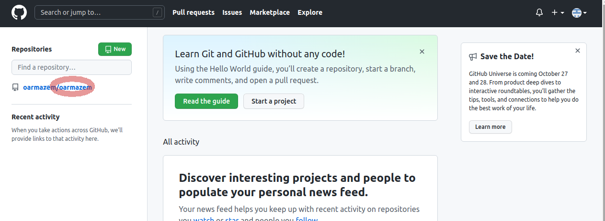
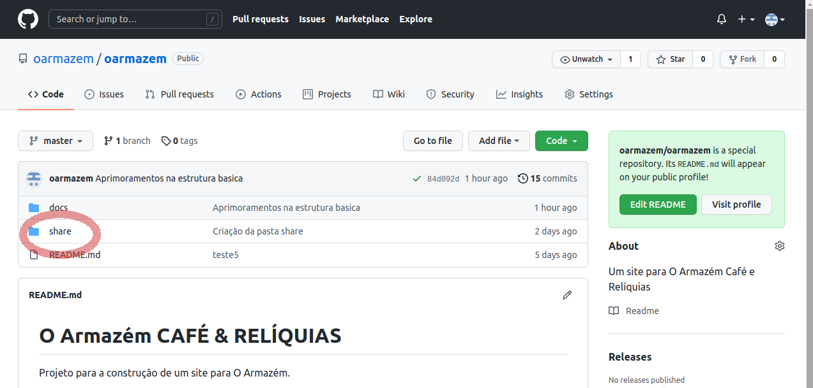
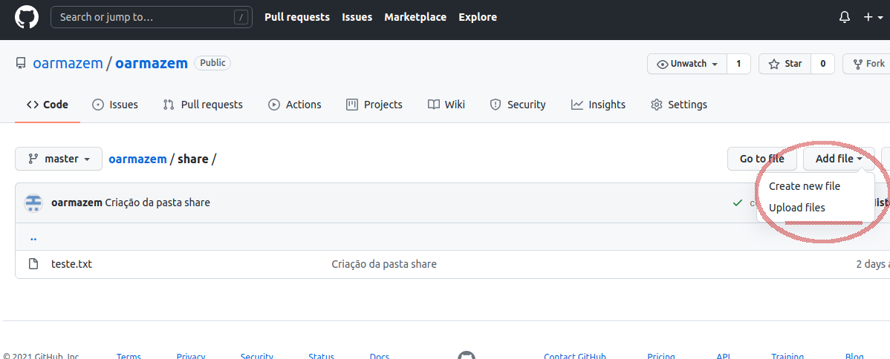
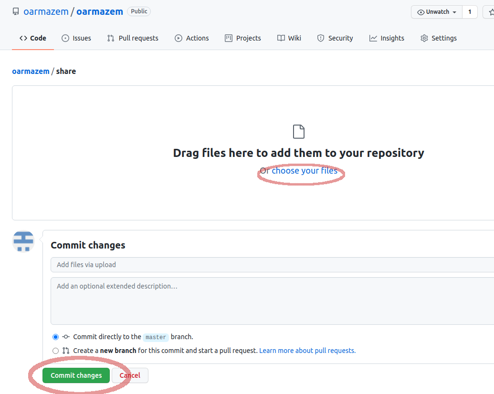

Em primeiro lugar, se você estiver utilizando neste momento o navegador Google Chrome, feche-o e abra esta página no Internet Explorer ou qualquer outro navegador.
Vai evitar que você entre no email cafereliquia@gmail.com com o Google Chrome e este solicite sincronizar esta conta. Se isso acontecesse agora, eu não teria mais acesso a esta sincronização porque já não tenho mais a senha deste email (supondo que você já tenha trocado a senha). No entanto isso alternaria o perfil usual do seu Chrome (associado à conta Xorumel) para um novo perfil, o que não é desejável.
Se bem que se você abrir uma janela separada e criar um perfil SEPARADO só pra conta cafereliquia, também não terá problema nenhum.
Mas vamos evitar estorvos mentais desnecessários: apenas siga este tutorial no IE do seu Windows e dessa vez não vai dar xabú.
Agora que você está vendo esta página em outro navegador que não o Chrome, clique aqui para fazer login na sua conta no GitHub.
Irá abrir a tela de login em uma nova aba no seu navegador para você poder continuar se guiando por este passo a passo.
Nessa tela de login, entre com o email da sua conta e password.
Email:
cafereliquia@gmail.com
Password:
ph3droph3droca
Neste ponto, o GitHub vai perceber que o seu dispositivo (computador) nunca acessou antes este repositório. Logo, para ter certeza que você é a dona da conta e possui acesso ao email cafereliquia@gmail.com, o GitHub irá enviar um código. Abra este email, copie e cole o código enviado.
Este código será solicitado uma única vez. Nós próximos logins será necessário apenas username e senha.
Fácil, né? Agora você já tem acesso ao repositório do projeto.
Feito o login você verá essa tela aí. Clique aonde está destacado para ter acesso ao repositório do projeto do site
Agora você está vendo a tela abaixo com as pastas do repositório. É só clicar na pasta share aonde eu destaquei na figura.
Pronto! Você está na pasta share do repositório e agora pode enviar quaisquer arquivos para dentro dela.
Para isso apenas clique no botão Add files que você vê na figura aí embaixo.
Clicando em choose your files selecione todos os arquivos que quiser enviar do seu computador e depois clique no botão verde, o Commit changes marcado aí embaixo.
Simples assim. Todos os arquivos foram enviados ao repositório.
Se preferir, antes de clicar no Commit, escreva algum comentário sobre os arquivos na caixa de texto acima deste botão Commit changes. Mas não é obrigatório.
E é só.